- Módulo: Administración de Sistemas Operativos
- Título del trabajo Samba
- Componentes del grupo: Iván José Hernández Regalado
- Curso Académico: 2014/2015
- Fecha de entrega: 13 de Marzo de 2015
Primero configuramos el servidor con un nombre e IP estática que no coincida con ninguna otra de la red local.
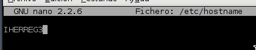
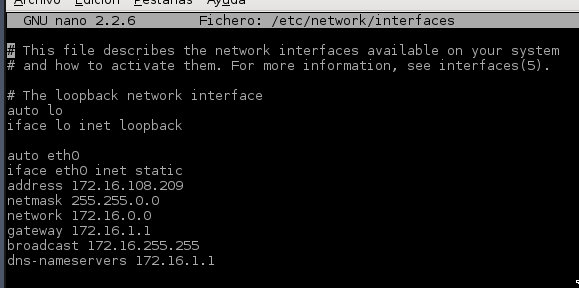
Luego instalamos instalamos el openssh.
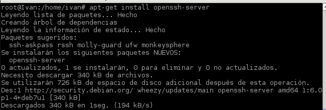
Ahora pasaremos con la creación de grupos y usuarios del servidor para luego usarlos en samba. Creamos los grupos informaticos y panaderos. Dentro de informaticos crearemos los usuarios info1, info2 y supersamba y dentro de panaderos crearemos pan1, pan2 y supersamba. Y para finalizar creamos el usuario sin grupo smbguest. Acordarse de ponerle contraseña a los usuarios del sistema por razones de seguridad.
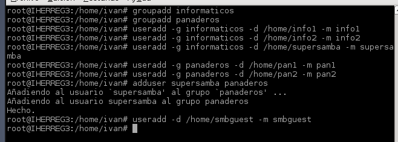
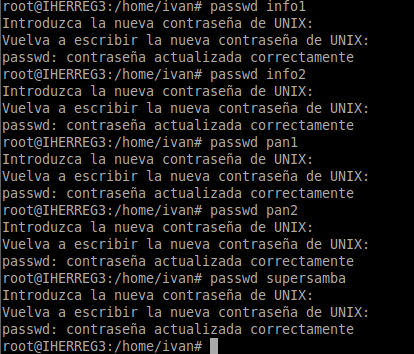
Para que no se puede acceder al sistema usando el usuario smbguest le cambiamos lo siguiente en el fichero "/etc/passwd".
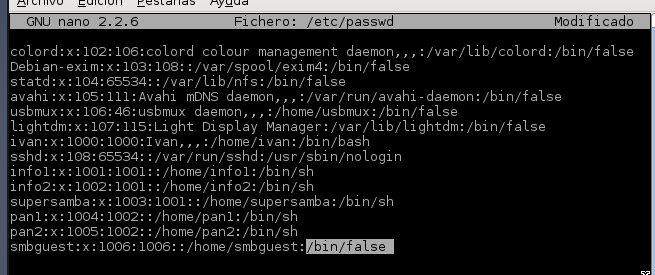
Pasamos con los usuarios de samba, para ello creamos el grupo usuariosamba y dentro de él metemos a todos los usuarios creados anteriormente.
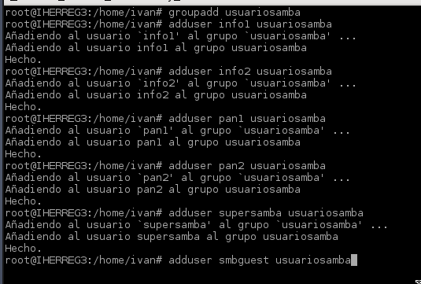
Instalaremos el samba en el servidor con el siguiente comando.
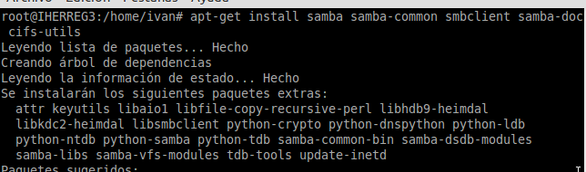
Una vez instalado vamos a comenzar su configuración para ello vamos a cambiar el nombre del archivo de configuración original y crear uno para configurarlo desde cero.
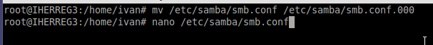
El archivo tendrá el siguiente contenido.
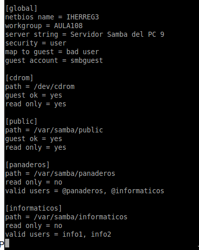
Ahora creamos las carpetas que vamos a compartir y le damos los siguientes permisos y propietarios.
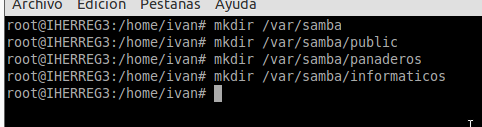
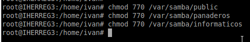
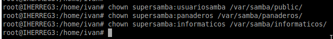
Lo que hacemos ahora es crear de samba a partir de los creados anteriormente. Con el comando "pdbedit -L" lista los usuarios de samba.
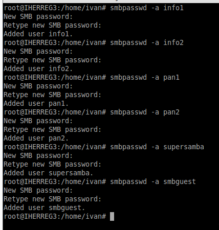
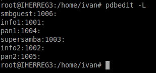
Para comprobar que los pasos se realizaron correctamente reiniciamos el servicio, en nuestro caso al usar un sistema lubuntu, necesitamos reiniciar dos servicios.
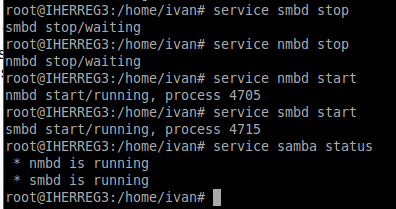
Por último comprobamos el fichero de configuración y miramos que servicios estan a la escucha.
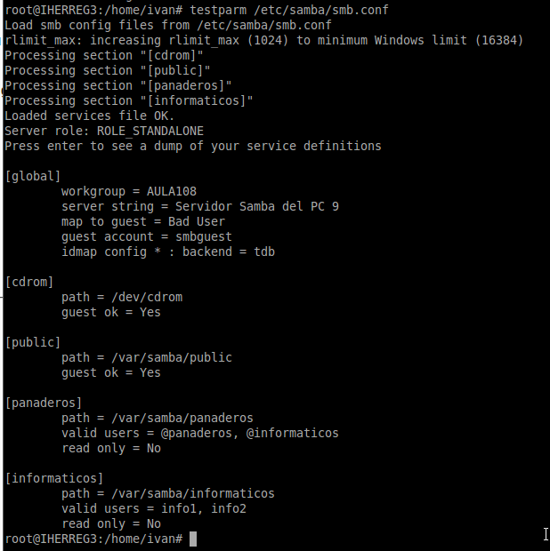
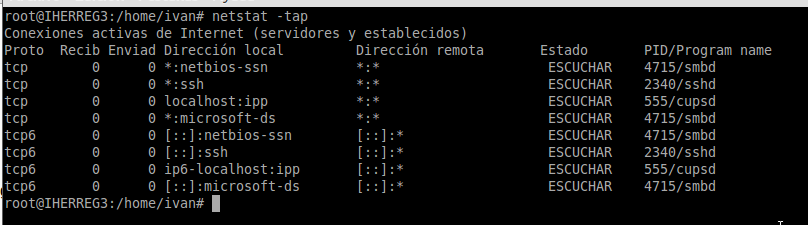
Primero configuramos la IP y el nombre de la máquina. Y comprobamos que tenemos conexión con el servidor.
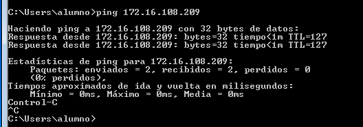
Ahora accedemos a los recursos compartidos a través del explorador de archivos.
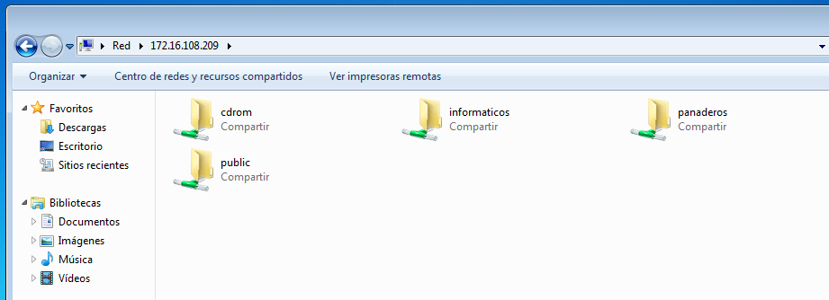
Luego intentamos acceder a un directorio compartido y creamos una carpeta dentro si entramos con un usuario que tenga dichos permisos.
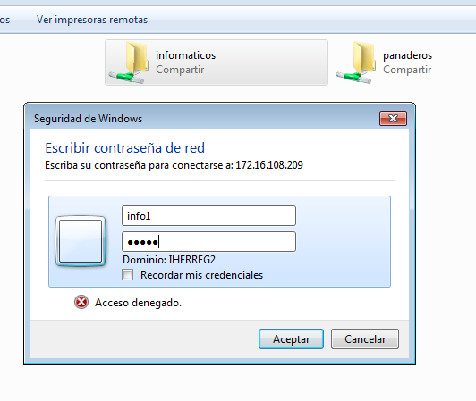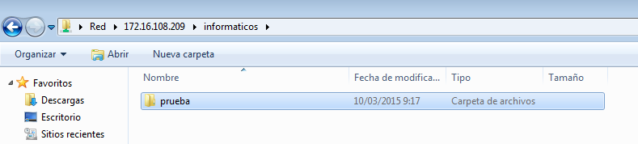
Desde la terminal probamos el siguiente comando que nos muestra los recursos que están actualmente conectados en la máquina.
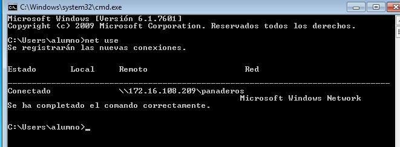
Si usamos el siguiente comando desmontamos todas las particiones que tengamos actualmente.
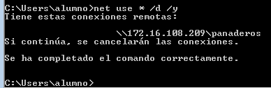
Con el comando net view vemos todos los servidores y máquinas que tienen recursos CIFS para distribuir.
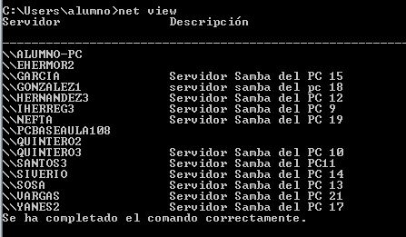
Para montar un recurso hacemos el siguiente comando donde especificamos el servidor, el recurso compartido, el usuario y la contraseña.
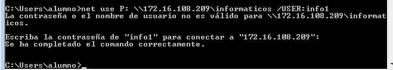
Para comprobar que efectivamente el cliente está usando el recurso compartido desde el servidor usamos los siguiente comandos.
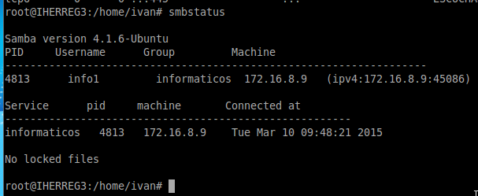
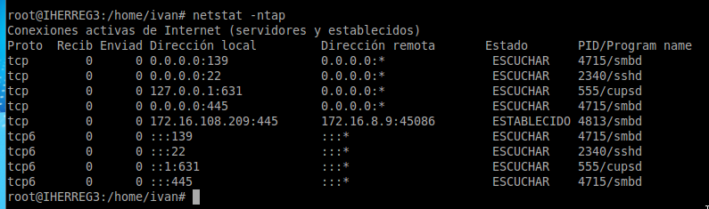
Una vez tenemos conexión con el servidor y con internet descargaremos el siguiente programa para usar recursos compartidos.
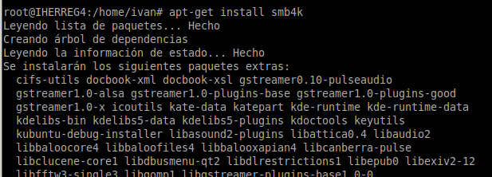
Ahora iniciamos el programa y realizamos una nueva conexión con un recurso de la siguiente manera.
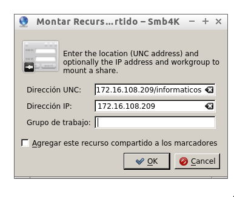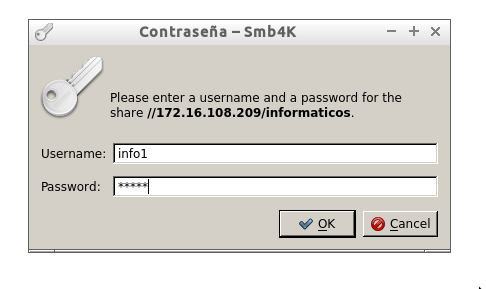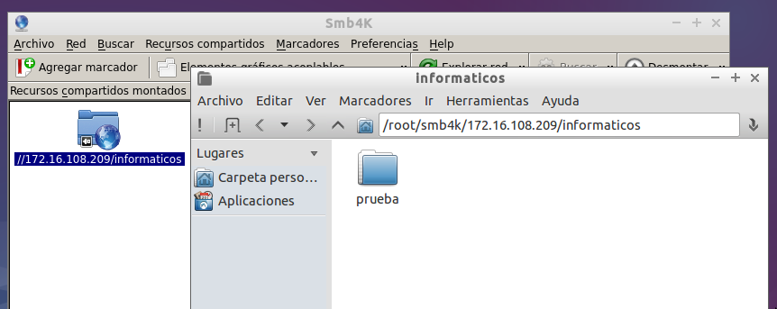
Una vez realizada la conexión probramos a crear una carpeta si el usuario tiene permisos y ver que se crea.
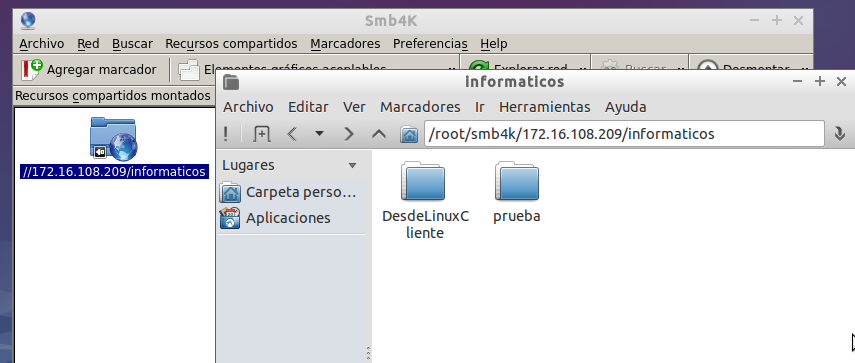
Desde el servidor comprobamos que se estableció la conexión con el cliente.
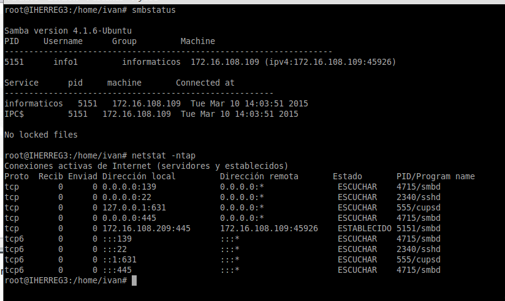
Ahora desde el cliente vamos a realizar el siguiente comando para ver que servidores están disponibles con recursos CIFS.
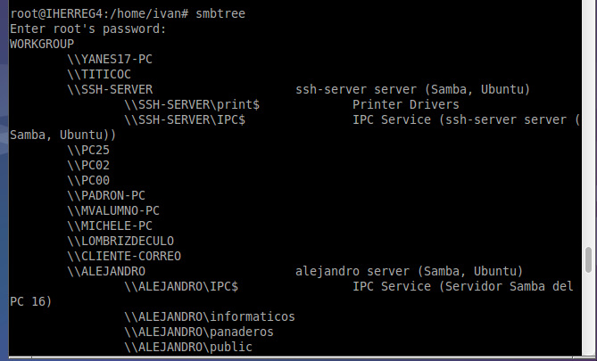
Una vez comprobado lo anterior vamos a ver que recursos tiene compartidos un servidor con el siguiente comando.
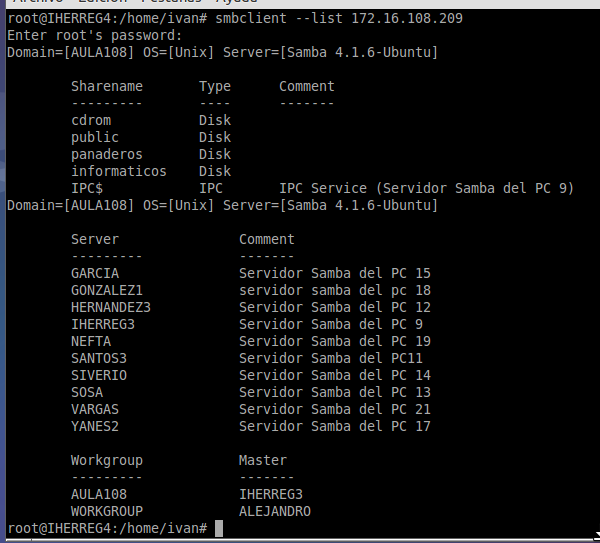
Pasamos ahora a montar los recursos manualmente, para ello creamos las carpetas que tiene para compartir el servidor en la ruta "/etc/samba-remoto". Una vez creadas montamos los recursos que queramos en las carpetas especificadas y usando un usuario válido.
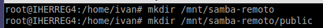
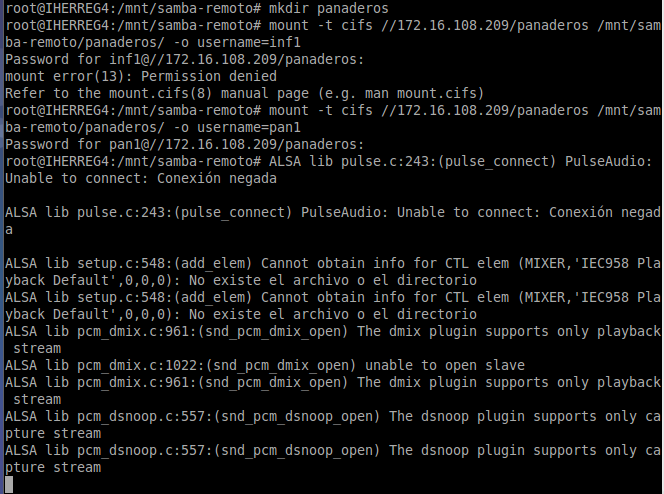
Para comprobar que los recursos están montados realizamos el siguiente comando en el cliente.
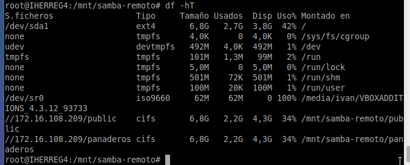
Ahora creamos una carpeta y comprobamos que en el servidor se creó.
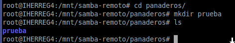
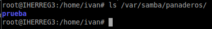
Para desmontar el recurso solo debemos usar el siguiente comando y comprobarlo con "df -hT".
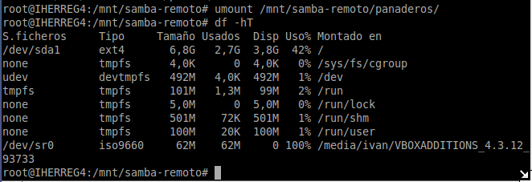
Para finalizar la práctica vamos a poner en el inicio del sistema los montajes de los recursos de nuestro servidor, para ello solo debemos ir al archivo "/etc/fstab" y añadir las tres últimas lineas. El ejemplo de montaje de un recurso en el archivo anterior es "//172.16.108.209/public /mnt/samba-remoto/public cifs username=info1, password=info1 0 0"
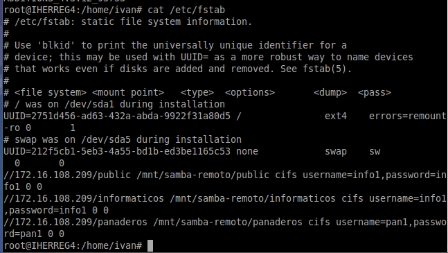
Luego reiniciamos el cliente y comprobamos nada mas iniciar sesion que los recursos están montados.
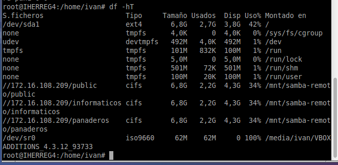